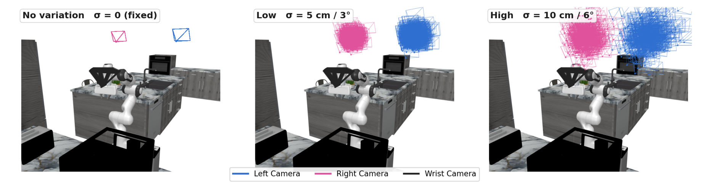
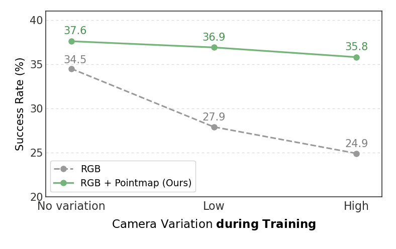

Four Controlled Studies, One Design
In controlled studies on RoboCasa H50, we hold the backbone and training recipe fixed and change only the 3D input. Click each takeaway for the evidence.
These studies use a π-style backbone initialized from raw PaliGemma (no robot pretraining), so absolute numbers are lower than the pretrained-VLA results below.
1Pre-compute robot-frame geometry instead of making the policy learn the camera-to-robot transform.▼
All variants below see the same scene, and the last two receive the same depth, intrinsics, and extrinsics. Pre-computing the transform into a pointmap is worth +3.1 points over leaving it for the policy to infer.
| Input | Transform | SR |
|---|---|---|
| RGB | none | 27.9 |
| RGB + Plücker | learned | 28.7 |
| RGB + Plücker + Depth | learned | 31.6 |
| RGB + Pointmap | pre-computed | 34.7 |
2Keep 3D in image form. Pointmaps outperform point clouds.▼
Preserving the H × W grid lets pointmap tokens be added element-wise to spatially corresponding RGB tokens, reaching 34.7 SR, above a pretrained Point Transformer v3 point-cloud branch (32.8) and an MLP point-cloud branch (24.2). Concatenating pointmap tokens as a separate sequence instead of adding them drops performance to 30.7.

3Center the pointmap at the end effector, not the robot base.▼
In the robot-base frame, grasp targets are scattered across the workspace. In the EE-centered frame they collapse near (0, 0, 0) at grasp time, giving the policy a consistent local geometry. EE-centering lifts SR from 34.7 to 36.9, and under randomized evaluation viewpoints it degrades by only −0.3 vs. −2.0 for base centering.

4The benefit grows as training-time viewpoint variation grows.▼
We jitter RoboCasa's camera poses per demonstration, from No variation to High (the same three levels as the graph at the top of the page, shown below). Where the RGB-only policy kept falling, the pointmap policy barely moves, 37.6 → 35.8, and its margin widens across the levels, +3.1 → +9.0 → +10.9.

